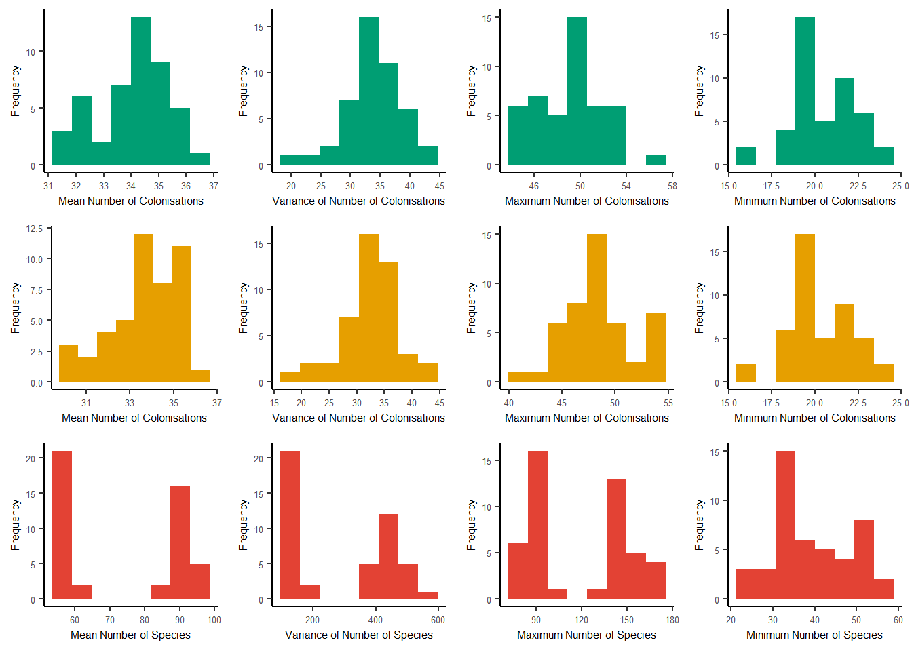
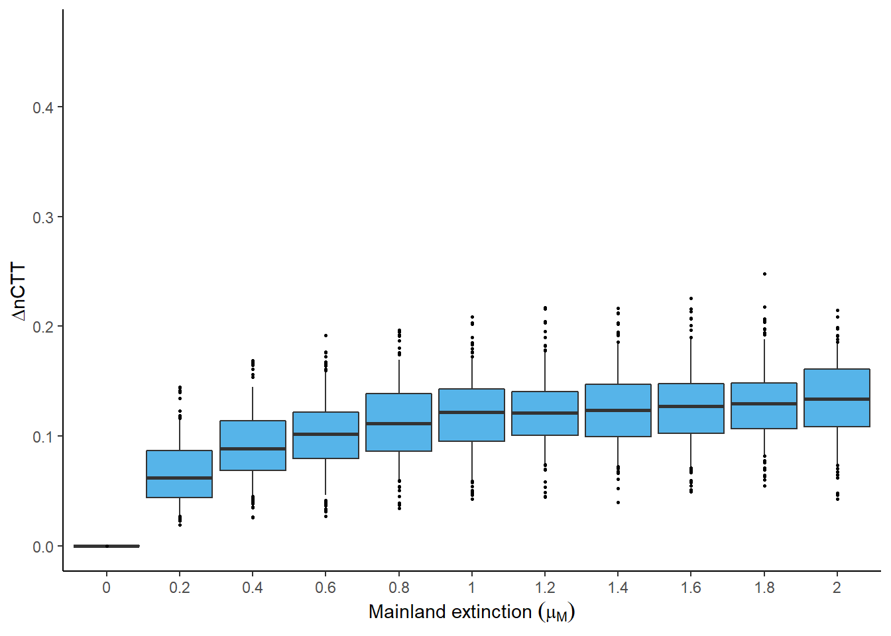
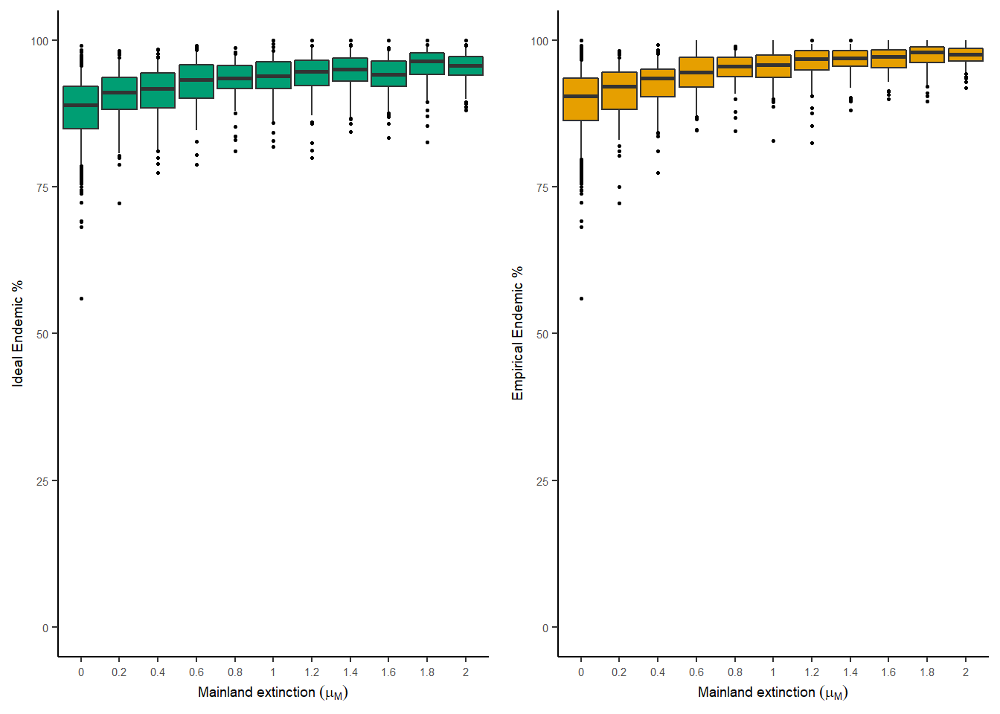
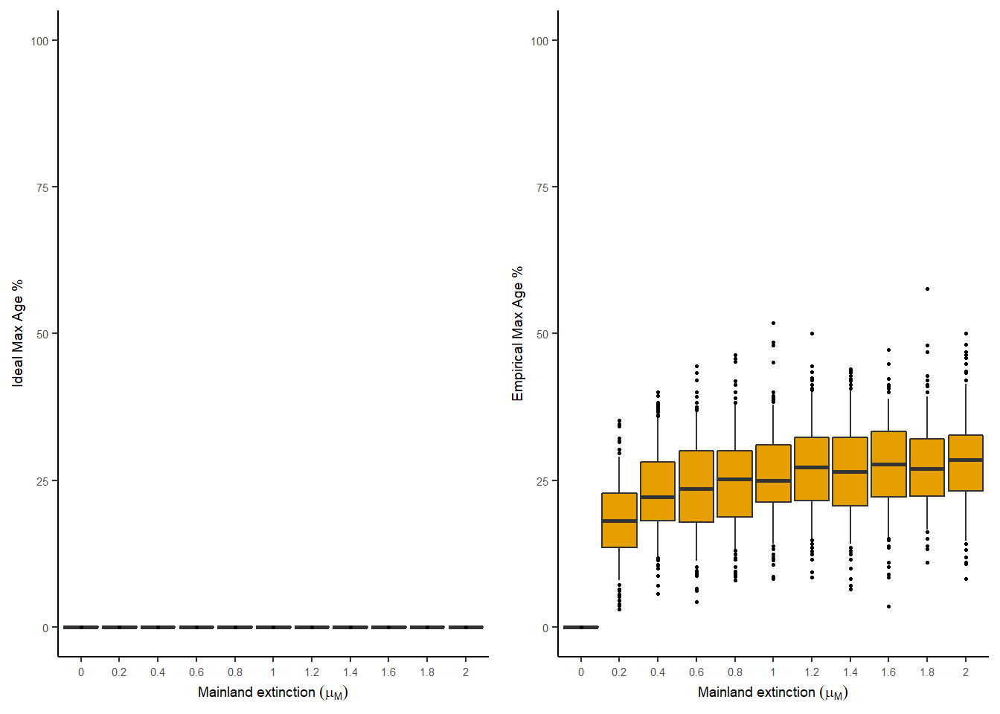

5 Summary and error metrics visualisation
There is a range of plotting functions to visualise the summary metrics and error metrics (Section4.3).
For the plotting of simulation summary and error metrics we need to load the results from multiple different mainland extinction scenarios.
analysis_results <- DAISIEmainland::read_analysis_results(
data_folder_path = system.file(
"/inst/book/data/param_sets/",
package = "DAISIEmainland"
)
)5.1 Simulation summary metrics
First we run the simulation. This is the same simulation as in the inference performance section (Section 4.1).
set.seed(
1,
kind = "Mersenne-Twister",
normal.kind = "Inversion",
sample.kind = "Rejection")
replicates <- 100
daisie_mainland_data <- DAISIEmainland::sim_island_with_mainland(
total_time = 1,
m = 100,
island_pars = c(0.5, 02.5, 50, 0.01, 0.5),
mainland_ex = 1.0,
mainland_sample_prob = 1,
mainland_sample_type = "complete",
replicates = replicates,
verbose = FALSE
)The simulation summary metrics we can calculate for the ideal and empirical data are:
- number of species on the island at the end of the simulation
- number of colonisation events to the island (that survived to the present) at the end of the simulation
ideal_sim_num_spec <- DAISIEmainland::calc_num_spec(
multi_daisie_data = daisie_mainland_data$ideal_multi_daisie_data
)
ideal_sim_num_spec
#> [1] 120 94 89 76 63 91 93 81 58 135 95 78 118 93 97 115 109 128 142 73 71 55 109 102 123 134 93 103
#> [29] 82 73 125 91 83 85 100 107 88 94 95 138 116 89 86 119 60 83 103 87 106 114 72 133 113 80 131 92
#> [57] 95 81 91 79 66 120 107 69 91 80 71 138 101 99 78 52 173 125 83 76 78 59 94 98 104 68 81 80
#> [85] 74 94 113 96 76 113 78 85 67 123 70 73 63 127 105 85ideal_sim_num_col <- DAISIEmainland::calc_num_col(
multi_daisie_data = daisie_mainland_data$ideal_multi_daisie_data
)
ideal_sim_num_col
#> [1] 44 33 39 28 29 30 33 35 28 42 36 32 46 38 30 38 45 40 40 28 28 28 41 34 39 45 34 32 33 29 31 36 33 32 38 34 36 31
#> [39] 29 41 43 34 36 34 24 30 33 28 42 37 24 37 43 33 45 35 27 37 37 28 29 40 36 30 31 32 27 48 40 47 30 22 41 38 37 27
#> [77] 35 28 37 33 40 27 38 30 35 38 39 37 30 37 31 33 25 42 35 37 29 31 31 36empirical_sim_num_spec <- DAISIEmainland::calc_num_spec(
multi_daisie_data = daisie_mainland_data$empirical_multi_daisie_data
)
empirical_sim_num_spec
#> [1] 120 94 89 76 63 91 93 81 58 135 95 78 118 93 97 115 109 128 142 73 71 55 109 102 123 134 93 103
#> [29] 82 73 125 91 83 85 100 107 88 94 95 138 116 89 86 119 60 83 103 87 106 114 72 133 113 80 131 92
#> [57] 95 81 91 79 66 120 107 69 91 80 71 138 101 99 78 52 173 125 83 76 78 59 94 98 104 68 81 80
#> [85] 74 94 113 96 76 113 78 85 67 123 70 73 63 127 105 85empirical_sim_num_col <- DAISIEmainland::calc_num_col(
multi_daisie_data = daisie_mainland_data$empirical_multi_daisie_data
)
empirical_sim_num_col
#> [1] 43 33 38 28 28 28 32 33 28 42 36 32 46 37 30 37 43 39 38 28 27 28 39 34 39 45 34 32 33 29 31 36 32 30 36 33 34 31
#> [39] 29 40 41 32 36 33 24 29 32 28 40 34 23 36 42 33 44 35 27 35 36 28 28 40 35 30 30 32 27 44 40 44 29 22 40 38 37 25
#> [77] 34 27 35 33 39 26 38 30 35 37 39 37 29 37 30 33 25 42 35 36 29 31 30 35We can plot the simulation summary metrics to view the mean, variance, maximum and minimum number of colonisations and number of species for the ideal and empirical data.
plot_sim_metrics(
analysis_results = analysis_results,
output_file_path = NULL
)
5.2 Inference error metrics
The error metrics were run for a range of mainland extinction rates. Then the error metrics can be plotted across different rates to determine how the error varies with faster or slower mainland evolutionary dynamics.
Plotting the \(\Delta\)CTT across mainland extinction rates between zero and two
(per species per million years). As explained in Section
4.3 this metric is a comparison between
the ideal and empirical data sets produced by the DAISIEmainland simulation.
plot_ctt_boxplot(
analysis_results = analysis_results,
output_file_path = NULL,
parameter = "mainland_ex"
)
The percentage of endemics on the island at the end of the simulation and percentage of maximum age colonisation times can be plotted for different values of mainland extinction. Each of the boxplots below contains 100 island replicates. The left hand panel is for the data set with complete information (ideal) and the right hand panel is for the data set with incomplete information (empirical).
plot_endemics(
analysis_results = analysis_results,
output_file_path = NULL,
parameter = "mainland_ex"
) 
plot_max_age(
analysis_results = analysis_results,
output_file_path = NULL,
parameter = "mainland_ex"
)
Error metrics can also be plotted across different values of mainland sampling
probability by setting the parameter = "mainland_sample_prob in the plotting
functions.
The plots shown in this chapter are not an exhaustive list available from the
package. The script used to make the plots for the two manuscripts using this
package can be found at /scripts/joss_data_vis.R and /scripts/evolution_data_vis.R,
respectively, in the DAISIEmainland package.